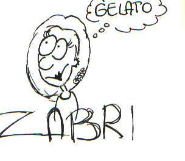
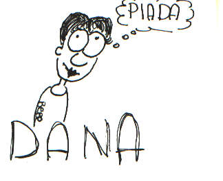
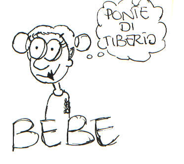

BEBE: "E già siamo a Rimini...che famo?!"
ZABRI: "Ci troviamo un bel Romagnolo?!?!"
BEBE: "Era una frase di circostanza lo sai che....."
DANA: "Spariamoci una piada!"
ZABRI: "Io la voglio alla nutella!"
BEBE: "Uffa ragazze, non siamo qui per questo...sse non completiamo la nostra missione ,sapete che pezza ci tira la Pio?!"
ZABRI DANA: "E dai, BEBE, non fare "il dulo"
BEBE: "Come on girls, seguitemi e come premio vi porterò alla gelateria "il pellicano" ok?"
DANA: "Buona questa piada!"
BEBE: "DANA, come puoi pensare alla piada in un momento
come questo?"
ZABRI: "In che momento scusa!?"
BEBE: "Siamo sul ponte di Tiberio, qui c'hanno camminato un sacco di persone: i romani....."
DANA: "Allora è "robba coatta", pure er Piotta, vero?"
ZABRI: "Lasciamo perdere, vediamo di scoprire
qualcosa!!"
BEBE: "Raga, attention please, questo ponte dal 1885 è un monumento nazionale; da qui inizia la via Emilia e la nostra storia......."
DANA: "Oooooooh!"
BEBE: "Costruito sul fiume Marecchia per iniziativa di Augusto nel 14 d.C. e portato a termine da Tiberio nel 21 d.C., il ponte di Tiberio è in pietra d'Istria ed ha 5 cornici.."
ZABRI: "Taglia bella!"
BEBE: "Dicevo che ci si arriva imboccando corso D'Augusto e si esce fuori dall'antica città romana. E' uno dei più notevoli ponti romani superstiti. Documento importante della sapienza tecnica dei Romani è il fatto che le fondazioni dei singoli piloni non sono disgiunte le une dalle altre, ma sono una fondazione unica, tale da assicurare la stabilità più completa.Il ponte comunica un'impressione di solida e maestosa presenza, grazie alle grandi masse fissate dalla accentuazione dell'arcata centrale..."
DANA: "Twix ,un taglio ci dai, vero?"
BEBE: "Non vi annoierò con l'architettura !" (vedi indice)
ZABRI: "Voglio il gelato "
BEBE: "Dopo Zabri, dopo....Al compimento del ponte veniva a istituirsi una coirrispondenza ideale fra i due nuovi monumenti posti a nord e a sud della città, che insieme diverranno poi l'emblema di Ariminum, fino a comparire in una strana simbiosi ideografica nel sigillo usato dal comune nel XII sec. e, prima ancora, dai duchi. Nell'organizzazione urbana,risultava rafforzata la dominante del decumano, specie dopo che nell'anno I d.C. il console Caio Cesare, figlio adottivo di Augusto, aveva provveduto a una lastricatura delle strade interne, parte integrante del programma di rinnovamento promosso dall'imperatore. Ok, sveglia, ho finito ragazze, yuhuuuu!!!!!"
ZABRI: " Gelato, gelato, gelato,....."
DANA: " Piada, piada, piada,......"
BEBE: " E già...missione compiuta...bèh...più o meno..."
BEBE, ZABRI, DANA:" Znafutz "
PER EVENTUALI PROTESTE PICCHIATE:
 
